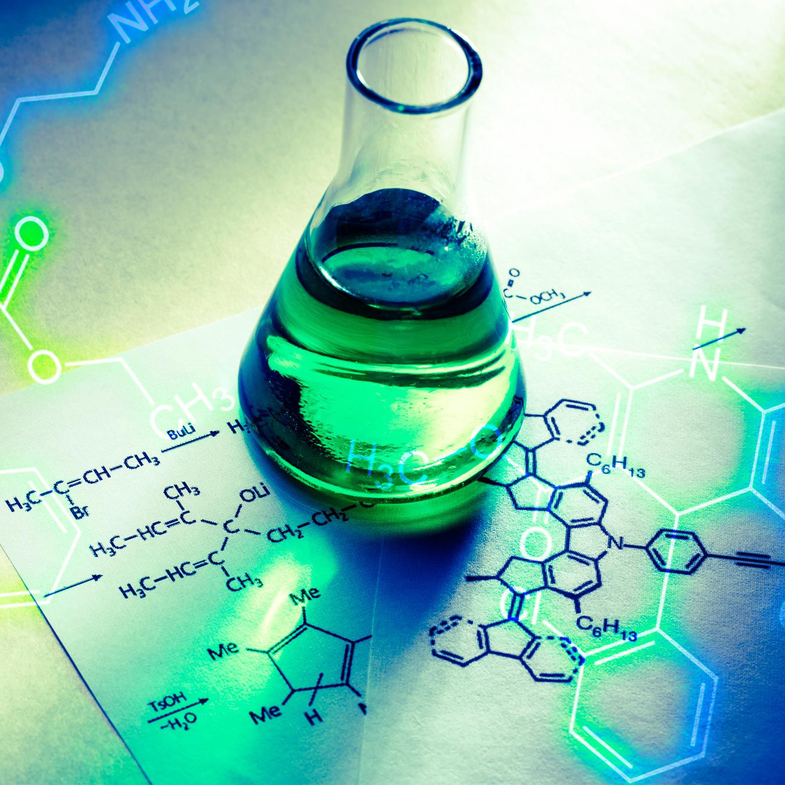

Experimento Quimico
.jpg)
.jpg)

CURIOSIDADES

As reações químicas podem ocorrer em diferentes velocidades. Além da natureza química e da quantidade de reagentes em uma reação, as diferenças de velocidade podem ocorrer também por outros fatores, entre eles, a superficie de contato entre os reagentes, a temperatura na qual a reação ocorre e a presença de um catalisador.
A temperatura é um dos fatores que contribuem para a proliferação de microrganismos. A maioria desses seres vivos possui altas taxas de reações
químicas entre 20°C e 60°C, permitindo que sua multiplicação seja rápida. Assim, ao manter um alimento em uma temperatura baixa, preferencialmente abaixo de 5°C, como os refrigeradores, os microrganismos têm taxa de reações químicas reduzida, o que retarda sua multiplicaçãoi e favorece a conservação dos alimentos.
Iniciando o Experimento
Materiais
Repolho roxo;
Vinagre;
Raspas de sabão em barra;
Leite de Magnésia;
Suco de Limão
Água
Faca com ponta arredondada;
Peneira grande;
Recipiente de plástico;
4 colheres (chá);
4 copos plásticos transparentes
(capacidade mínima de 100mL);
3 copos plásticos pequenos; (50mL)
Panela com tampa;
Máquina fotográfica.
COMO FAZER
No copo 1, coloque duas colheres da solução extraída do repolho roxo, que você obteve no terceiro passo - 3. Misture e observe o que acontece. Utilize a máquina fotográfica para registrar coloração da solução do copo.
Agora, com outra colher, despeje duas colheres da solução extraída do repolho roxo no copo 2. Misture e observe o que acontece. Registre a coloração do copo com uma fotografia.
Repita os procedimentos anteriores com o suco de limão e com as raspas de sabão em barra. Para isso, numere os outros dois copos (3 e 4) e coloque o suco de limão no copo 3 e as raspas de sabão no copo 4. Observe os resultados e registre as imagens.